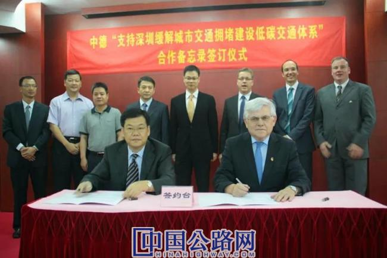
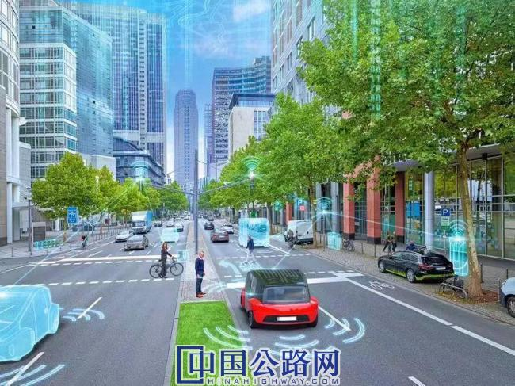

微官网
微官网
2020-12-16 交通运输部官微 作者：赵鹏飞 毛剑 张雨涵
回首来处，皆是风景。
今年是中德建立全方位战略伙伴关系6周年。“中国与德国的关系早已超出双边范畴。如今中德务实合作的效应不是简单的一加一等于二，而是远远大于二。”中国驻德国大使吴恳在接受媒体采访时表示。
这片风景横跨欧亚大陆，串联起中德经贸合作蓬勃跳跃的成长脉搏。不难发现，两国交通运输领域的新技术合作早已牵手多年，正在蓄势远航。“我们双方在交通运输领域的合作，在全球范围内具有重要意义。” 德国联邦交通和数字基础设施部有关负责人表示。
近年来，在自动驾驶、危险货物运输安全、低碳交通等领域，在企业的你来我往之中，中德两国在交通运输新技术合作方面增深度、拓广度，为两国经济社会发展带来好处、吹出新风。

开展低碳交通合作项目。
企业加强合作共谋未来
多年来，中德双方政府持续深化交流、磋商，促成了一系列合作协议的签订，吸引了越来越多的德国企业进驻我国市场，双方企业在自动驾驶、高铁技术等领域密切合作。鲜为人知的是，改革开放初期，是德国先抛出了“绣球”。
1985年10月29日，德国西门子股份公司（简称西门子公司）和中国政府在北京签署了《西门子公司与中华人民共和国在机械工业、电气工程和电子工业等领域开展合作的备忘录》。这是第一家应邀与中国进行深入合作的外国企业。
刘长华于1984年3月加入西门子公司北京代表处，他亲历了备忘录的洽谈和签署过程，“当时改革开放刚刚起步，中国希望扩大对外开放，引进吸收国外先进技术。西门子正是凭借在交通等众多领域的全方位技术实力，得以抢占先机”。
改革开放后的40多年里，历史向前迈出的每一步，无论艰难还是顺遂，心意相通的中德企业都一直携手相伴。近几年来，双方以超乎想象的速度迈入深层次合作——从之前仅面向中国开拓市场，到共同开发全球市场；从简单投资扩产能的基础合作，到共同研发、快速布局前瞻技术等。
在电动车领域，中德汽车界的合作层面贯穿了整个产业主体。德国大众汽车集团分别与中国安徽江淮汽车集团股份有限公司、中国第一汽车集团有限公司合作，共同建立新能源汽车研发中心，打造新能源汽车基础设施；德国宝马公司牵手中国长城汽车股份有限公司设立合资企业，与华晨中国汽车控股有限公司合作战略升级，首款电动车型BMW iX3预计在中国生产后出口全球等……一个囊括政府、行业协会、企业、科研机构的大“生态群”轮廓开始凸显。
在轨道无人驾驶领域，中德企业“抱团出海”，致力于全球市场开拓。2017年3月，西门子交通与中车株洲电力机车联手马来西亚本地公司组成联合体，成功中标马来西亚轻轨3号线项目，敲定了第一个由中国企业牵头主导的海外全自动无人驾驶轻轨车辆项目。
西门子交通大中华区首席执行官莫德表示，“西门子交通进入中国最早的案例可追溯到1899年的北京，提供了从马家堡火车站到永定门的有轨电车。回望植根中国百余年的历史，中德企业的合作模式正在转变。过去，我们更多的是在德国总部生产交通设备的零部件，再出口到中国。现在我们看到大环境越来越开放了，西门子交通在中国有了更多的工程业务，并不断和中国企业共同组建合资公司和研发中心，得到了中国政府的大力支持。”
2019年，西门子交通为北京地铁19号线一期工程提供全自动无人驾驶列车牵引系统。今年9月，西门子交通在华首个智能交通5G能力中心落户重庆，在智能网联、5G、自动驾驶、交通仿真、边缘计算等领域开展深入研究。莫德告诉记者，“5G技术是实现交通管理、自动驾驶的最大前提，我们认为未来的交通世界将会在中国被谱写。未来，我们将在能力中心的基础上，不断探索更加满足本地需求的智能交通综合解决方案，与本地合作伙伴一同打造更加可持续的、全程无缝衔接的智能网联应用和交通出行服务。”
中德日益密切的合作还体现在研发人才间的交流。自2016年2月与中国国家铁路集团有限公司（原中国铁路总公司）签署谅解备忘录以来，西门子交通已多次邀请其代表团赴德调研培训，实地参观西门子总部多个工厂并深入技术交流，实现合作共赢。
“经济全球化背景下，中德两国企业合作发展已从‘互补’到‘互融’。”首都经济贸易大学教授刘宏在“中德工业融合发展论坛”上表示，中国制造2025与德国工业4.0的战略不谋而合，有很大共鸣，这也是未来中国制造业转型升级的重要机遇。

西门子交通未来智能网联应用场景。
为危货运输安全管理请“外援”
数据显示，我国现有危险货物运输从业人员约165.6万人，车辆约37.5万辆，体量巨大。在发展过程中，暴露出了不少安全漏洞。
“道路千万条，安全第一条。”在危险货物运输领域，安全是头等大事。2019年2月25日，由中德携手推进的危险货物运输合作项目，即“提升中国危险货物运输安全项目”在北京启动，为我国危货运输安全管理请来了“外援”。
交通运输部运输服务司货运与物流管理处处长余兴源表示，德国在危货运输领域已经建立了非常健全的法律法规体系，拥有丰富的运营管理经验，也是欧盟各类危货运输法规制度的主要参与者和起草者。中德相互交流、务实合作，有助于构建安全高效的现代化危货运输管理体系。
德国国际合作机构（GIZ）提升中国危险货物运输安全项目主任李静竹介绍，该项目的合作将促进中德在危险品运输政策方面的对话，实施以应用为导向的政策咨询及试点项目，其中包括建立国际危险货物运输专家组，为中国交通运输部危货运输法规体系工作提供技术咨询，借鉴德国经验，为建立危货运输执法监督体系提出建议。同时，项目还将组织开展从业人员能力建设，促进中德两国产学研交流互动。
“德国在危险货物道路运输管理方面还拥有强大的专家顾问团队。我们充分予以借鉴，组建了由众多业内专家组成的智囊团，将为行业的发展不断助力！”余兴源说。交通运输部将借助中德合作项目，按照“补齐两个短板、健全两项制度、建设一套系统、转化一个规则”的总体思路，弥补托运充装环节管理漏洞、常压罐车罐体检验漏洞，全面实施和完善危货运单管理制度、危险货物运输豁免制度，努力健全标准体系，建设安全监管系统，强化政策支撑，助力安全发展。
2018年12月，部公路科学研究院赴德考察电气化高速公路；2019年5月，部公路局技术管理处处长张建军与部公路科学研究院4位专家参加电气化公路国际研讨会并作主旨发言……在电气化公路方面，中德双方也正积极对接，推进新技术合作取得新进展。
据了解，电气化公路系统借鉴了成熟的铁路电气化技术，融合了有轨电车模式和无轨电车模式，是在对高速公路进行电气化改造升级的基础上形成的一种新的交通模式，能效更高，且能减少碳排放量。
交通节能减排合作全面推进
推动节能减排，是交通运输行业实现绿色发展的着力点之一。在中德应对气候变化合作的背景下，两国交通运输部门积极推进，中德低碳交通合作项目应运而生，为中德及全球交通运输领域应对气候变化作出贡献。
2015年3月，中德低碳交通合作项目启动。据悉，项目由交通运输部运输服务司和GIZ共同执行，目标是在制定可持续交通发展战略与政策措施方面，由德方为中方合作伙伴提供技术与能力建设支持。
项目启动以来，中德双方聚焦多式联运、可持续城市配送、新能源汽车、汽车共享、低碳公共交通等领域，开展了大量卓有成效的合作，就低碳交通多项议题进行了交流与研讨。
交通排放是城市空气主要污染源之一，全面掌握城市交通排放及扩散规律，对于提升城市综合环境品质具有重要意义。实际上，中德低碳交通合作在项目启动之前就已经开始。
2013年6月22日，在中德合作框架下，深圳市交通运输局与德国联邦环境、自然保护和核安全部就“支持深圳缓解城市交通拥堵建设低碳交通体系”签署合作协议，深圳市城市交通规划设计研究中心有限公司（简称深圳交通中心）与GIZ联合承担该研究课题。
2014年，在合作课题的基础上，深圳交通中心在交通运行评估、排放核算建模等方面取得了一系列创新和突破。基于本地化交通排放因子，利用交通大数据优势，深圳交通中心建立了交通需求模型、精细化交通排放计算模型，在德方的帮助下建成了深圳市道路交通排放监测平台，其成果被认为达到国际先进水平。2017年，深圳交通中心成立交通碳排放工程实验室，进一步升级排放监测平台，主要开展全方式交通排放监测应用、交通排放扩散应用研究。
这一监测系统应用效果如何？
深圳交通中心交通信息与模型院院长丘建栋表示，对于市民来说，未来可以通过互联网或移动终端及时查询实时或历史的交通排放信息，了解其强度和时空分布，并据此选择合适的出行路线和时间。“市民可以灵活选择在交通排放量较低的时段和路段跑步、骑行。”丘建栋说。
对交通运输主管部门来说，定量化的交通排放监测与核算是科学制定交通和环境政策、评估减排效果的技术工具。基于监测系统，深圳市交通运输主管部门可以根据交通排放的时空分布，合理划定机动车低排放区范围，将交通排放和拥堵程度作为停车分区和收费动态调整的“双约束”。此外，交通排放模型还可以为商家店铺选址等提供参考，例如，咖啡店老板可选择在交通排放较低、空气质量较好的路段开店。
种种新气象，弥补了传统交通排放核算方法不能反映车辆类型、时空分布等不足，能更好地满足精细化交通和环境管理需要。
“特别佩服德国在这方面的管理模式！他们派出专家，几次到深圳指导我们构建本地模型。他们还准备与我们共同举办国际性论坛，推进粤港澳大湾区交通环境合作。”丘建栋说。在技术合作过程中，德方的专注严谨、持续推进、不断钻研的工匠精神和全球化视野，给他和同事们留下了十分深刻的印象。
在交通与燃料战略、多式联运等新技术合作中，中德双方也正加紧推进、共建未来。
德国联邦交通和数字基础设施部有关负责人表示，制定交通政策的目标应在关注出行的同时，考虑到交通的生态、经济性和社会的持续性。近几年，两国交通运输主管部门在环境友好和交通燃料战略的新能源交通领域方面，保持着紧密和成功的合作。
“交通和燃料战略是德国联邦政府落实交通领域能源转型的关键途径，展示了交通领域的动力和燃料选择及其需要的配套基础设施。我们和中国交通运输部的合作伙伴，正在就如何持续和深化我们的合作进行有益的探讨。”该负责人说，双方在2016年中德政府磋商期间签署了合作备忘录，开展了于2019年结束的“中国交通转型的交通燃料战略”合作项目。同之前合作一样，双方有很多地方可以互相学习借鉴，比如顺应时代发展的交通规划、微观交通的构建、促进发展非机动交通以及人口变化下的农村交通等多领域的问题。
在中德《关于交通与燃料战略及政策措施领域合作谅解备忘录》和两国交通运输主管部门负责人的会谈下，2017年7月，交通运输部综合规划司和GIZ在北京联合召开交通与燃料战略项目启动会，并签署了《交通与燃料战略对中国交通行业转型的贡献——京津冀试点项目执行协议》，联合开展课题研究等相关工作。
在交通运输部综合规划司的指导下，交通运输部规划研究院环境资源所发挥支撑作用，促进中德双方开展了一系列工作会谈、研讨会、培训团等形式多样的交流活动。
拓展合作领域 拥抱发展机遇
中德双边合作中，自动驾驶、智能网联汽车方面的合作无疑是挖掘深层次合作的新领域。
当地时间2018年7月9日，中国工业和信息化部与德国联邦经济和能源部、联邦交通和数字基础设施部在德国柏林共同签署《关于自动网联驾驶领域合作的联合意向声明》，旨在增进相互了解和信息交流，加强政府部门、行业组织、企业等在自动网联驾驶/智能网联汽车领域的多层次交流与合作。
同年12月13日，中国工业和信息化部装备工业司与德国联邦交通和数字基础设施部数字化社会司、德国联邦经济和能源部工业政策司在北京召开了中德智能网联汽车合作第一次工作会议。
据了解，中国交通运输部科技司、公安部交通管理局、国家市场监督管理总局标准技术管理司及工业和信息化部相关司局，德国驻华大使馆，以及两国行业协会、产业联盟、汽车和通信等研究机构的30多名代表参加了会议。
会上，双方就各自智能网联汽车发展政策、测试、研发、示范等基本情况进行了交流，重点就技术标准研制与合作、国际法规制定与协调、相关法律法规修订完善、测试区建设和应用示范、C-V2X（基于蜂窝技术的车联网通信）发展及相应的无线电频率规划、基础设施建设等6个领域进行了深入讨论，明确了工作组牵头单位及合作计划。
自此，中德自动驾驶领域合作迈出了重要一步。
自动驾驶技术方面的合作仅仅是中德推进交通新技术合作的一例。积极对接、有效落实，是中德两国推进交通运输新技术务实合作的共识。
习近平主席强调，大国关系事关全球战略稳定，大国肩上都承担着特殊责任。我们要以更大的开放拥抱发展机遇，以更好的合作谋求互利共赢，引导经济全球化朝正确方向发展。
积极做行动派、不做观望者。2019年5月24日，中国交通运输部部长李小鹏与德国联邦交通和数字基础设施部部长安德里亚斯·朔伊尔在柏林举行工作会谈，双方一致同意提升两国交通运输合作水平，设立部长级中德交通论坛。双方还签署了《关于提升交通运输领域合作意向的联合声明》。下一步，双方将不断推进交通发展规划、新能源应用、危险货物道路运输、自动驾驶等领域的合作，助力中德合作更上一层楼。
中德两国在交通运输领域乃至全方位的战略合作蹄疾步稳，必将推动“地球号”驶向更美好的明天。
亲历者说
我与上海地铁的“一面之缘”
西门子中国交通业务员工 史蒂芬
过去，曾有外国专家评价，上海地质条件复杂，松软含水的地层犹如豆腐渣。在这样的条件下建造地铁，难度不亚于“在宇宙中找到一个撬动地球的支点”。但几代中国人攻坚克难，硬是创造出“豆腐渣里打洞”的奇迹，让上海用20年就走完了西方城市100年的地铁发展之路。
1995年4月10日，历时5年建设的上海地铁一号线一期工程（锦江乐园站—上海火车站站）全线通车试运营。这是上海市首批扩大利用外资方案中的五项城市基础设施之一。修建过程中，西门子与合作伙伴专门组建联合体——德沪集团，为一号线项目实施了包括车身、牵引、供电和通信等在内的机电系统交钥匙工程。
作为一名德国德沪地铁集团的工程师，我曾在1992年的汉诺威博览会上与前来参观的上海地铁公司客户有过一面之缘。但怎么也没有想到，自己与中国的缘分竟然会延续至今。机缘巧合中，我和其他德国德沪地铁集团的工程师一同来到上海，共同保证地铁一号线顺利投运。在一号线通车庆典上，我走在沿途欢迎的人群中，第一次有机会细细体验这片热土带给我的惊喜与变化。
地铁一号线工期紧、任务重。我常在忙碌之余，去好奇地探索这座蓬勃发展中的城市。那时的上海内环线刚刚开始修建，而在黄浦江对岸的浦东，一片阡陌农田之上开始零星立起几幢高楼。这些有趣的变化，让我至今难以忘怀。
2005年，在完成一号线延长线和二号线项目之后，我回到了德国。有一天，突然接到来自西门子德国的电话，邀请我加入广州地铁三号线项目。深思熟虑后，我决定再次回到中国开始新的人生旅途。
随着西门子交通事业在中国各地陆续推进，我亲身感受到中国轨道交通创造了一个又一个奇迹。于我而言，早已和上海地铁结下了不解的情缘。这里有我的一帮客户和同事“老朋友们”，我们曾经为一条条地铁并肩奋战，也曾一起在绿茵场上挥汗如雨。二十多年过去了，许多人已经退休或者改行，亦或者回到了各自的国家，但大家还会保持联系，时常聚一聚，每天都会在手机上关注中国地铁日新月异的变化。与此同时，西门子在中国布局无人驾驶领域也持续创新。2017年年底，西门子赢得其在华首个城市轨道交通无人驾驶项目，为上海轨道交通18号线一期项目提供全自动无人驾驶车辆牵引系统的核心部件和关键技术。
初到沪上，至今已二十多年。回想这些年的光阴，我想：“这就是命运，你无法预料。”